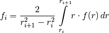
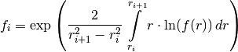
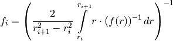
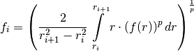

Helper functions¶
Anaflow subpackage providing several helper functions.
Functions¶
The following functions are provided
rad_amean_func(func, val_arr[, arg_dict]) |
Calculating the arithmetic mean of a radial symmetric function for given consecutive radii defining 2D disks by the following formula |
rad_gmean_func(func, val_arr[, arg_dict]) |
Calculating the geometric mean of a radial symmetric function for given consecutive radii defining 2D disks by the following formula |
rad_hmean_func(func, val_arr[, arg_dict]) |
Calculating the harmonic mean of a radial symmetric function for given consecutive radii defining 2D disks by the following formula |
rad_pmean_func(func, val_arr[, p, arg_dict]) |
Calculating the p-mean of a radial symmetric function for given consecutive radii defining 2D disks by the following formula |
radii(parts[, rwell, rinf, rlast, typ]) |
Calculation of specific point distributions for the diskmodel. |
specialrange(val_min, val_max, steps[, typ]) |
Calculation of special point ranges. |
specialrange_cut(val_min, val_max, steps[, …]) |
Calculation of special point ranges. |
T_CG(rad, TG, sig2, corr[, prop, Twell]) |
The coarse-graining Transmissivity. |
T_CG_inverse(T, TG, sig2, corr[, prop, Twell]) |
The inverse function of the coarse-graining Transmissivity. |
T_CG_error(err, TG, sig2, corr[, prop, Twell]) |
Calculating the radial-point where the relative error of the farfield value is less than the given tollerance. |
K_CG(rad, KG, sig2, corr, e[, prop, Kwell]) |
The coarse-graining conductivity. |
K_CG_inverse(K, KG, sig2, corr, e[, prop, Kwell]) |
The inverse function of the coarse-graining conductivity. |
K_CG_error(err, KG, sig2, corr, e[, prop, Kwell]) |
Calculating the radial-point where the relative error of the farfield value is less than the given tollerance. |
aniso(e) |
The anisotropy function. |
well_solution(rad, time, T, S, Qw[, …]) |
The classical Theis solution for transient flow under a pumping condition in a confined and homogeneous aquifer. |
-
anaflow.helper.rad_amean_func(func, val_arr, arg_dict=None, **kwargs)[source]¶ Calculating the arithmetic mean of a radial symmetric function for given consecutive radii defining 2D disks by the following formula

Parameters: - func (
callable) – function that should be used The first argument needs to be the radial variable:func(r, **kwargs) - val_arr (
numpy.ndarray) – given radii defining the disks - arg_dict (
dictorNone, optional) – Keyword-arguments given as a dictionary that are forwarded to the function given infunc. Will be merged with**kwargs. This is designed for overlapping keywords inrad_amean_funcandfunc. Default:None - **kwargs – Keyword-arguments that are forwarded to the function given in
func. Will be merged witharg_dict
Returns: Array with all calculated arithmetic means
Return type: Raises: ValueError– If func is not callable.ValueError– Ifval_arrhas less than 2 values.ValueError– Ifval_arris not sorted in incresing order.
Notes
If the last value in val_arr is “inf”, the given function should provide a value for “inf” as input:
func(float("inf"))Example
>>> f = lambda x: x**2 >>> rad_amean_func(f, [1,2,3]) array([ 2.33588885, 6.33423311])
- func (
-
anaflow.helper.rad_gmean_func(func, val_arr, arg_dict=None, **kwargs)[source]¶ Calculating the geometric mean of a radial symmetric function for given consecutive radii defining 2D disks by the following formula

Parameters: - func (
callable) – function that should be used The first argument needs to be the radial variable:func(r, **kwargs) - val_arr (
numpy.ndarray) – given radii defining the disks - arg_dict (
dictorNone, optional) – Keyword-arguments given as a dictionary that are forwarded to the function given infunc. Will be merged with**kwargs. This is designed for overlapping keywords inrad_gmean_funcandfunc. Default:None - **kwargs – Keyword-arguments that are forwarded to the function given in
func. Will be merged witharg_dict
Returns: Array with all calculated geometric means
Return type: Raises: ValueError– If func is not callable.ValueError– Ifval_arrhas less than 2 values.ValueError– Ifval_arris not sorted in incresing order.
Notes
If the last value in val_arr is “inf”, the given function should provide a value for “inf” as input:
func(float("inf"))Example
>>> f = lambda x: x**2 >>> rad_gmean_func(f, [1,2,3]) array([ 2.33588885, 6.33423311])
- func (
-
anaflow.helper.rad_hmean_func(func, val_arr, arg_dict=None, **kwargs)[source]¶ Calculating the harmonic mean of a radial symmetric function for given consecutive radii defining 2D disks by the following formula

Parameters: - func (
callable) – function that should be used The first argument needs to be the radial variable:func(r, **kwargs) - val_arr (
numpy.ndarray) – given radii defining the disks - arg_dict (
dictorNone, optional) – Keyword-arguments given as a dictionary that are forwarded to the function given infunc. Will be merged with**kwargs. This is designed for overlapping keywords inrad_gmean_funcandfunc. Default:None - **kwargs – Keyword-arguments that are forwarded to the function given in
func. Will be merged witharg_dict
Returns: Array with all calculated geometric means
Return type: Raises: ValueError– If func is not callable.ValueError– Ifval_arrhas less than 2 values.ValueError– Ifval_arris not sorted in incresing order.
Notes
If the last value in val_arr is “inf”, the given function should provide a value for “inf” as input:
func(float("inf"))Example
>>> f = lambda x: x**2 >>> rad_hmean_func(f, [1,2,3]) array([ 2.33588885, 6.33423311])
- func (
-
anaflow.helper.rad_pmean_func(func, val_arr, p=1.0, arg_dict=None, **kwargs)[source]¶ Calculating the p-mean of a radial symmetric function for given consecutive radii defining 2D disks by the following formula

Parameters: - func (
callable) – function that should be used The first argument needs to be the radial variable:func(r, **kwargs) - val_arr (
numpy.ndarray) – given radii defining the disks - p (
float, optional) – The potency defining the p-mean. Default:1.0 - arg_dict (
dictorNone, optional) – Keyword-arguments given as a dictionary that are forwarded to the function given infunc. Will be merged with**kwargs. This is designed for overlapping keywords inrad_pmean_funcandfunc. Default:None - **kwargs – Keyword-arguments that are forwarded to the function given in
func. Will be merged witharg_dict
Returns: Array with all calculated p-means
Return type: Raises: ValueError– If func is not callable.ValueError– Ifval_arrhas less than 2 values.ValueError– Ifval_arris not sorted in incresing order.
Notes
If the last value in val_arr is “inf”, the given function should provide a value for “inf” as input:
func(float("inf"))Example
>>> f = lambda x: x**2 >>> rad_pmean_func(f, [1,2,3]) array([ 2.33588885, 6.33423311])
- func (
-
anaflow.helper.radii(parts, rwell=0.0, rinf=inf, rlast=500.0, typ='log')[source]¶ Calculation of specific point distributions for the diskmodel.
Parameters: - parts (
int) – Number of partitions. - rwell (
float, optional) – Radius at the well. Default:0.0 - rinf (
float, optional) – Radius at the outer boundary. Default: :any:np.inf - rlast (
float, optional) – Setting the last radius befor the outer boundary. Default:500.0 - typ (
str, optional) – Setting the distribution type of the radii. Default:"log"
Returns: - p_rad (
numpy.ndarray) – Array containing the separating radii - f_rad (
numpy.ndarray) – Array containing the function-evaluation points within each disk
Example
>>> radii(2) (array([ 0., 500., inf]), array([ 0., inf]))
- parts (
-
anaflow.helper.specialrange(val_min, val_max, steps, typ='log')[source]¶ Calculation of special point ranges.
Parameters: - val_min (
float) – Starting value. - val_max (
float) – Ending value - steps (
int) – Number of steps. - typ (
strorfloat, optional) –Setting the kind of range-distribution. One can choose between
"log": for logarithmic behavior"lin": for linear behavior"quad": for quadratic behavior"cub": for cubic behaviorfloat: here you can specifi any exponent (“quad” would be equivalent to 2)
Default:
"log"
Returns: Array containing the special range
Return type: Example
>>> specialrange(1,10,4) array([ 1. , 2.53034834, 5.23167968, 10. ])
- val_min (
-
anaflow.helper.specialrange_cut(val_min, val_max, steps, val_cut=inf, typ='log')[source]¶ Calculation of special point ranges.
Parameters: - val_min (
float) – Starting value. - val_max (
float) – Ending value - steps (
int) – Number of steps. - val_cut (
float) – Cutting value, if val_max is bigger than this value, the last interval will be between val_cut and val_max - typ (
strorfloat, optional) –Setting the kind of range-distribution. One can choose between
"log": for logarithmic behavior"lin": for linear behavior"quad": for quadratic behavior"cub": for cubic behaviorfloat: here you can specifi any exponent (“quad” would be equivalent to 2)
Default:
"log"
Returns: Array containing the special range
Return type: Example
>>> specialrange_cut(1,10,4) array([ 1. , 2.53034834, 5.23167968, 10. ])
- val_min (
-
anaflow.helper.T_CG(rad, TG, sig2, corr, prop=1.6, Twell=None)[source]¶ The coarse-graining Transmissivity.
This solution was presented in ‘’Schneider & Attinger 2008’‘[R3].
This functions gives an effective transmissivity for 2D pumpingtests in heterogenous aquifers, where the transmissivity is following a log-normal distribution and a gaussian correlation function.
Parameters: - rad (
numpy.ndarray) – Array with all radii where the function should be evaluated - TG (
float) – Geometric-mean of the transmissivity-distribution - sig2 (
float) – log-normal-variance of the transmissivity-distribution - corr (
float) – corralation-length of transmissivity-distribution - prop (
float, optional) – Proportionality factor used within the upscaling procedure. Default:1.6 - Twell (
float, optional) – Explicit transmissivity value at the well. Default:None
Returns: T_CG – Array containing the effective transmissivity values.
Return type: References
[R3] Schneider, C. and Attinger, S., ‘’Beyond thiem: A new method for interpreting large scale pumping tests in heterogeneous aquifers.’’ Water resources research, 44(4), 2008 Example
>>> T_CG([1,2,3], 0.001, 1, 10, 2) array([ 0.00061831, 0.00064984, 0.00069236])
- rad (
-
anaflow.helper.T_CG_inverse(T, TG, sig2, corr, prop=1.6, Twell=None)[source]¶ The inverse function of the coarse-graining Transmissivity. See:
T_CG()Parameters: - T (
numpy.ndarray) – Array with all transmissivity values where the function should be evaluated - TG (
float) – Geometric-mean of the transmissivity-distribution - sig2 (
float) – log-normal-variance of the transmissivity-distribution - corr (
float) – corralation-length of transmissivity-distribution - prop (
float, optional) – Proportionality factor used within the upscaling procedure. Default:1.6 - Twell (
float, optional) – Explicit transmissivity value at the well. Default:None
Returns: rad – Array containing the radii belonging to the given transmissivity values
Return type: Example
>>> T_CG_inverse([7e-4,8e-4,9e-4], 0.001, 1, 10, 2) array([ 3.16952925, 5.56935826, 9.67679026])
- T (
-
anaflow.helper.T_CG_error(err, TG, sig2, corr, prop=1.6, Twell=None)[source]¶ Calculating the radial-point where the relative error of the farfield value is less than the given tollerance. See:
T_CG()Parameters: - err (
float) – Given relative error for the farfield transmissivity - TG (
float) – Geometric-mean of the transmissivity-distribution - sig2 (
float) – log-normal-variance of the transmissivity-distribution - corr (
float) – corralation-length of transmissivity-distribution - prop (
float, optional) – Proportionality factor used within the upscaling procedure. Default:1.6 - Twell (
float, optional) – Explicit transmissivity value at the well. Default:None
Returns: rad – Radial point, where the relative error is less than the given one.
Return type: Example
>>> T_CG_error(0.01, 0.001, 1, 10, 2) 34.910450167790387
- err (
-
anaflow.helper.K_CG(rad, KG, sig2, corr, e, prop=1.6, Kwell='KH')[source]¶ The coarse-graining conductivity.
This solution was presented in ‘’Zech 2013’‘[R8].
This functions gives an effective conductivity for 3D pumpingtests in heterogenous aquifers, where the conductivity is following a log-normal distribution and a gaussian correlation function and taking vertical anisotropy into account.
Parameters: - rad (
numpy.ndarray) – Array with all radii where the function should be evaluated - KG (
float) – Geometric-mean conductivity-distribution - sig2 (
float) – log-normal-variance of the conductivity-distribution - corr (
float) – corralation-length of conductivity-distribution - e (
float) – Anisotropy-ratio of the vertical and horizontal corralation-lengths - prop (
float, optional) – Proportionality factor used within the upscaling procedure. Default:1.6 - Kwell (
strorfloat, optional) – Explicit conductivity value at the well. One can choose between the harmonic mean ("KH"), the arithmetic mean ("KA") or an arbitrary float value. Default:"KH"
Returns: K_CG – Array containing the effective conductivity values.
Return type: References
[R8] Zech, A. ‘’Impact of Aqifer Heterogeneity on Subsurface Flow and Salt Transport at Different Scales: from a method determine parameters of heterogeneous permeability at local scale to a large-scale model for the sedimentary basin of Thuringia.’’ PhD thesis, Friedrich-Schiller-Universität Jena, 2013 Example
>>> K_CG([1,2,3], 0.001, 1, 10, 1, 2) array([ 0.00063008, 0.00069285, 0.00077595])
- rad (
-
anaflow.helper.K_CG_inverse(K, KG, sig2, corr, e, prop=1.6, Kwell='KH')[source]¶ The inverse function of the coarse-graining conductivity. See:
K_CG()Parameters: - K (
numpy.ndarray) – Array with all conductivity values where the function should be evaluated - KG (
float) – Geometric-mean conductivity-distribution - sig2 (
float) – log-normal-variance of the conductivity-distribution - corr (
float) – corralation-length of conductivity-distribution - e (
float) – Anisotropy-ratio of the vertical and horizontal corralation-lengths - prop (
float, optional) – Proportionality factor used within the upscaling procedure. Default:1.6 - Kwell (
strorfloat, optional) – Explicit conductivity value at the well. One can choose between the harmonic mean (“KH”), the arithmetic mean (“KA”) or an arbitrary float value. Default:"KH"
Returns: rad – Array containing the radii belonging to the given conductivity values
Return type: Example
>>> K_CG_inverse([7e-4,8e-4,9e-4], 0.001, 1, 10, 1, 2) array([ 2.09236867, 3.27914996, 4.52143956])
- K (
-
anaflow.helper.K_CG_error(err, KG, sig2, corr, e, prop=1.6, Kwell='KH')[source]¶ Calculating the radial-point where the relative error of the farfield value is less than the given tollerance. See:
K_CG()Parameters: - err (
float) – Given relative error for the farfield conductivity - KG (
float) – Geometric-mean conductivity-distribution - sig2 (
float) – log-normal-variance of the conductivity-distribution - corr (
float) – corralation-length of conductivity-distribution - e (
float) – Anisotropy-ratio of the vertical and horizontal corralation-lengths - prop (
float, optional) – Proportionality factor used within the upscaling procedure. Default:1.6 - Kwell (
strorfloat, optional) – Explicit conductivity value at the well. One can choose between the harmonic mean (“KH”), the arithmetic mean (“KA”) or an arbitrary float value. Default:"KH"
Returns: rad – Radial point, where the relative error is less than the given one.
Return type: Example
>>> K_CG_error(0.01, 0.001, 1, 10, 1, 2) 19.612796453639845
- err (
-
anaflow.helper.aniso(e)[source]¶ The anisotropy function.
Known from ‘’Dagan (1989)’‘[R2].
Parameters: e ( float) – Anisotropy-ratio of the vertical and horizontal corralation-lengthsReturns: aniso – Value of the anisotropy function for the given value. Return type: floatRaises: ValueError– If the Anisotropy-ratioeis not within 0 and 1.References
[R2] Dagan, G., ‘’Flow and Transport on Porous Formations’‘, Springer Verlag, New York, 1989. Example
>>> aniso(0.5) 0.23639985871871511
-
anaflow.helper.well_solution(rad, time, T, S, Qw, struc_grid=True, hinf=0.0)[source]¶ The classical Theis solution for transient flow under a pumping condition in a confined and homogeneous aquifer.
This solution was presented in ‘’Theis 1935’‘[R9].
Parameters: - rad (
numpy.ndarray) – Array with all radii where the function should be evaluated - time (
numpy.ndarray) – Array with all time-points where the function should be evaluated - T (
float) – Given transmissivity of the aquifer - S (
float) – Given storativity of the aquifer - Qw (
float) – Pumpingrate at the well - struc_grid (
bool, optional) – If this is set to “False”, the “rad” and “time” array will be merged and interpreted as single, r-t points. In this case they need to have the same shapes. Otherwise a structured r-t grid is created. Default:True - hinf (
float, optional) – Reference head at the outer boundary “rinf”. Default:0.0
Returns: well_solution – Array with all heads at the given radii and time-points.
Return type: Raises: ValueError– Ifradis not positiv.ValueError– Iftimeis not positiv.ValueError– If shape ofradandtimediffer in case ofstruc_gridisTrue.ValueError– IfTis not positiv.ValueError– IfSis not positiv.
References
[R9] Theis, C., ‘’The relation between the lowering of the piezometric surface and the rate and duration of discharge of a well using groundwater storage’‘, Trans. Am. Geophys. Union, 16, 519–524, 1935 Notes
The parameters
rad,TandSwill be checked for positivity. If you want to use cartesian coordiantes, just use the formular = sqrt(x**2 + y**2)Example
>>> well_solution([1,2,3], [10,100], 0.001, 0.001, -0.001) array([[-0.24959541, -0.14506368, -0.08971485], [-0.43105106, -0.32132823, -0.25778313]])
- rad (